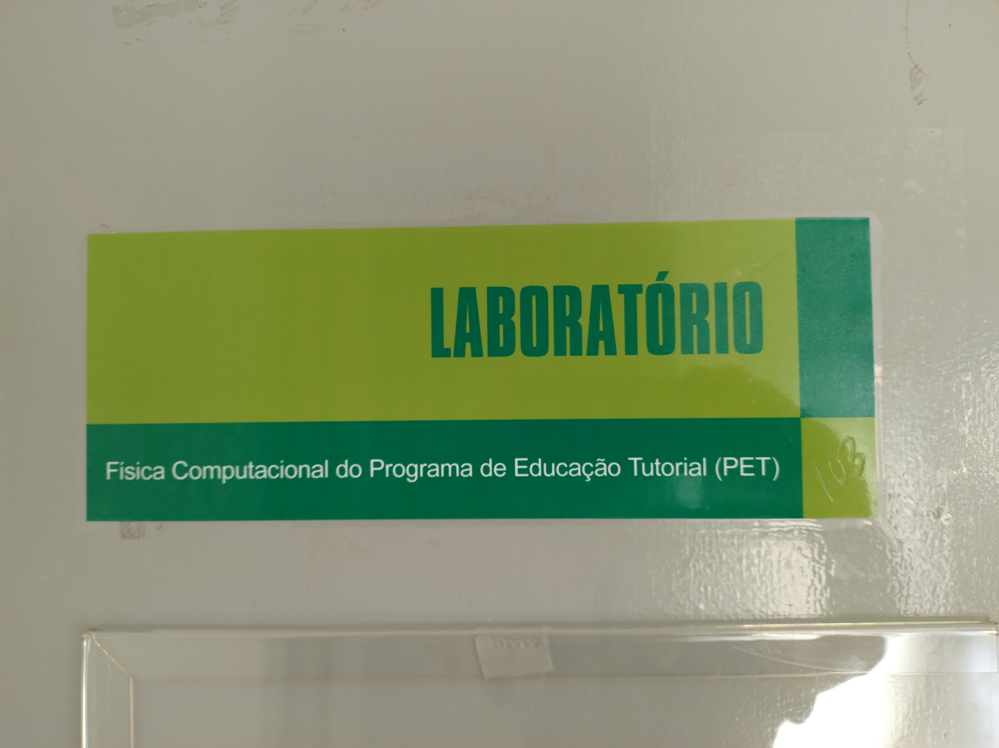
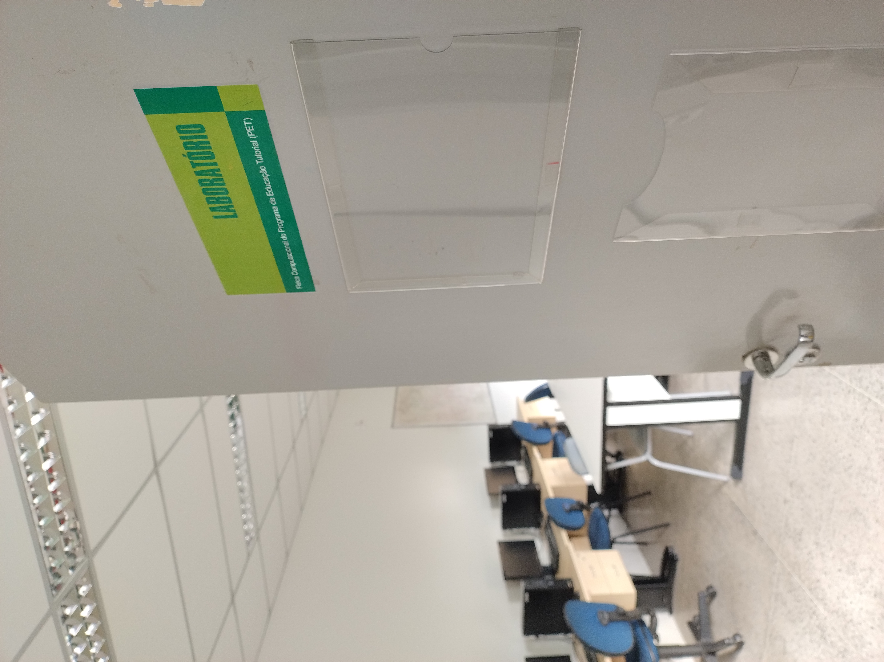

Programa de Educação Tutorial
Integrando ensino, pesquisa e extensão para uma formação acadêmica completa




NOVIDADES!!!
O Edital para o Programa de Ensino Tutorial (PET) já está disponível. As inscrições ocorrerão de 28 de outubro a 8 de novembro de 2024. Serão 8 vagas no total, distribuídas nas áreas de Astronomia, Física Computacional e Eletromagnetismo. O estudante bolsista do PET desenvolverá atividades de ensino, pesquisa e extensão.
Baixe o Edital
Acesse o edital completo para ver os requisitos, datas e demais informações essenciais.
Download do EditalBem-vindo ao PET IFCE Sobral
O Programa de Educação Tutorial (PET) é uma iniciativa que visa promover a formação acadêmica integral dos estudantes, articulando ensino, pesquisa e extensão. No PET IFCE Sobral, trabalhamos para oferecer uma experiência enriquecedora aos nossos membros, contribuindo para o desenvolvimento pessoal e profissional.
Nossa Equipe
Atualmente, o PET IFCE Sobral é composto por 8 membros dedicados, distribuídos nas áreas de pesquisa em astronomia, eletromagnetismo aplicado e análise de dados. Sob a orientação de um professor tutor, estamos engajados em projetos de pesquisa significativos nessas áreas, buscando contribuir para o avanço do conhecimento científico.
Conheça nossa equipeNossas Atividades
Explore nossas iniciativas nas áreas de Ensino, Pesquisa e Extensão
Ensino
Materiais de apoio e atividades complementares para enriquecer a formação acadêmica.
Saiba MaisExtensão
Atividades que integram a universidade com a comunidade e promovem transformação social.
Saiba MaisO que é o grupo PET?
Conheça os pilares que fundamentam nosso trabalho
Ensino
O pilar do ensino no PET visa aprimorar a formação acadêmica dos estudantes através de atividades que complementam a grade curricular, promovendo uma maior integração entre teoria e prática.
Pesquisa
No pilar da pesquisa, o PET incentiva os estudantes a se envolverem em projetos de investigação científica, estimulando a curiosidade e a busca por soluções inovadoras para problemas relevantes.
Extensão
O pilar da extensão visa levar o conhecimento produzido na universidade para a comunidade externa, promovendo a interação entre o meio acadêmico e a sociedade.